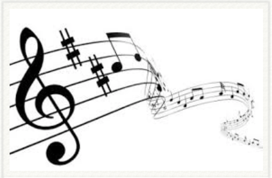

Hier staat dezelfde bladmuziek als op de MuseScore pagina,
maar dan in PDF formaat.
Zo kun je ze direct afdrukken.
Als je niet weet hoe dat het eenvoudig gaat op je eigen computer
vraag dan een familielid of kennis met verstand van computers om even te helpen.

| Adio Kerida: adiokerida.pdf | Olijven vallen: olijven.pdf |
| Boroech Ate: boroech.pdf | Polegala: polegala.pdf |
| Daar is de lente: lente.pdf | Step da step krugom: step.pdf |
| Ejder ich lejg mich: ejder.pdf | Ty paduj: typaduj.pdf |
| Erev shell shoshanim: erev.pdf | Waar bleeft ge: waar.pdf |
| Gorani: gorani.pdf | Za dvinoj: zadvinoj.pdf |
| Mnogaja ljeta: mnogaja.pdf |